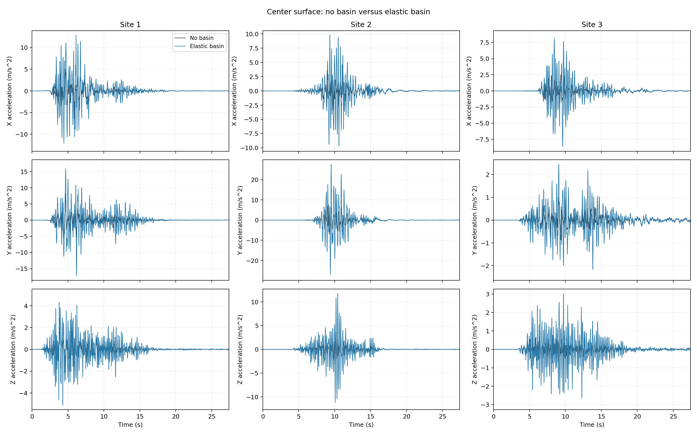
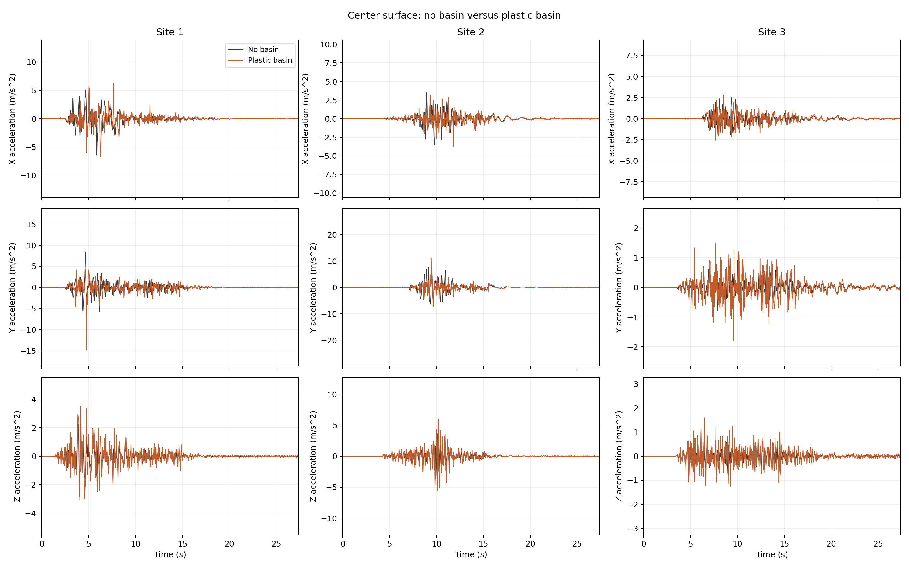
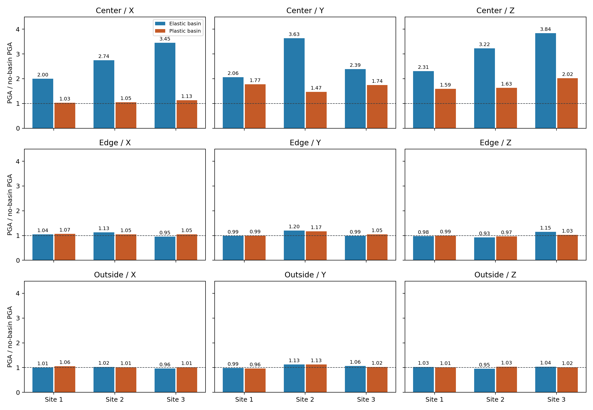

Elastic and Plastic Basin
How does a soft soil basin change earthquake motion at the ground surface? This example compares an elastic basin, a plastic basin, and a layered background without a basin at three sites. It walks through model construction, DRM excitation, surface-response interpretation, and remote workflow execution.
Within each site, the three configurations share the same geometry, mesh, incoming wave field, and recording settings. The no-basin configuration assigns the host layer's material, density, and damping to the basin cells. Comparing against this background isolates the effect of the soft inclusion.
Regional Background
The incoming motions come from a physics-based SW4 regional earthquake simulation, described by Huang and McCallen (2025). The scenario represents a magnitude Mw 6.5 strike-slip earthquake. SW4 computes wave propagation from the fault through the regional geology, including a sedimentary basin. Three DRM boxes extract the wave field at different sites.

| Site | Approximate Fault-Normal Distance | Position Relative to Site 1 |
|---|---|---|
| 1 | 1 km | Near-fault reference site |
| 2 | 1 km | 20 km along the fault |
| 3 | 18 km | 17 km farther from the fault |
DRM transfers the regional wave field into each local Femora model. The regional sedimentary basin in SW4 and the small local soft basin added in Femora are distinct. The no-basin case omits only the additional local basin; its excitation still contains the regional source, propagation, and site effects. The following model focuses on how that additional soft deposit changes the surface motion.
Model and Assumptions
| Item | Configuration |
|---|---|
| Units | m, kN, tonne, s; moduli and stresses in kPa |
| Physical domain | 128 x 128 x 48 m |
| Mesh | 4 m bricks; 12,288 physical cells; consistent mass |
| Basin | Sphere center (0, 0, 70) m, radius 85 m, intersected with the soil |
| Materials | Elastic host; elastic or PressureIndependMultiYield basin |
| Absorber | Eight layers on the sides and bottom; Rayleigh damping setting 0.95 |
| Analysis | Implicit Newmark; Modified Newton with factor-once dynamics |
| Time | 27.4 s; initial integration step 0.01 s; recording interval 0.02 s |
| Partitions | 32 physical + 64 absorber partitions = 96 MPI ranks per case |
The basin is a shallow spherical cap with its ideal bottom at z = -15 m and surface radius approximately 48.22 m. Whole bricks are assigned by their cell centers, producing a stepped interface. Shared basin and host nodes are merged during assembly so that the materials form one continuous soil domain.


The cutaway and center section show the physical soil mesh. The absorbing extension is omitted from this view. All cases use small-strain brick elements; only the plastic basin has nonlinear material behavior.
Model Construction
The material argument of build_model() selects "elastic",
"plastic", or "no_basin". The workflow builds all three at each site.
Both basin materials use density 1.8 tonne/m3, Vs = 150 m/s, and Vp = 300 m/s. These give shear modulus G = 40,500 kPa and bulk modulus K = 108,000 kPa. The plastic material uses cohesion 8 kPa and peak shear strain 0.1. The no-basin case retains the same cells but uses their corresponding host-layer properties.
# 1. Define the soft basin material from Vs = 150 and Vp = 300 m/s.
# G = rho*Vs^2 and K = rho*(Vp^2 - 4*Vs^2/3); both cases start equally stiff.
basin_g = BASIN_DENSITY * 150.0**2
basin_k = BASIN_DENSITY * (300.0**2 - 4.0 * 150.0**2 / 3.0)
if material == "elastic":
basin_material = model.material.nd.elastic_isotropic(
user_name="basin", E=2.0 * basin_g * (1.0 + 1.0 / 3.0), nu=1.0 / 3.0, rho=BASIN_DENSITY,
)
elif material == "plastic":
basin_material = model.material.nd.pressure_independ_multi_yield(
user_name="basin", nd=3, rho=BASIN_DENSITY,
refShearModul=basin_g, refBulkModul=basin_k,
cohesi=8.0, peakShearStra=0.1,
)
if material != "no_basin":
# Both basin cases share viscous damping; plasticity adds hysteresis.
basin_damping = None if no_physical_damping else model.damping.frequency_rayleigh(damping_factor=0.03, f1=3.0, f2=15.0)
basin_region = model.region.element(user_name="basin", damping=basin_damping)
# stdBrick expects body force per volume: density times gravity, in kN/m^3.
basin_element = model.element.brick.std(ndof=3, material=basin_material, lumped=False, b3=-9.81 * BASIN_DENSITY)
The six host layers extend downward from the surface, each with two rows of 4 m bricks. Only the upper two layers intersect the basin. The mesh separates basin cells from host cells without duplicating either.
| Layer | Thickness (m) | Density (tonne/m3) | Vp (m/s) | Vs (m/s) | Damping Ratio |
|---|---|---|---|---|---|
| 1 | 8 | 2.14205 | 669.05 | 353.10 | 0.0296 |
| 2 | 8 | 2.14620 | 785.25 | 414.40 | 0.0269 |
| 3 | 8 | 2.15035 | 886.05 | 467.60 | 0.0249 |
| 4 | 8 | 2.15445 | 976.40 | 515.30 | 0.0234 |
| 5 | 8 | 2.15860 | 1059.05 | 558.95 | 0.0221 |
| 6 | 8 | 2.16275 | 1135.65 | 599.40 | 0.0211 |
# 2. Build the six host layers, walking downward from the surface.
# Each 8 m layer contains two 4 m brick rows.
# Cell-center selection makes a stepped, conforming basin/host boundary.
part_names = []
z_top = 0.0
for name, density, vp, vs, damping_ratio, thickness in LAYERS:
z_bottom = z_top - thickness
# Convert each layer's wave speeds into elastic stiffness and Poisson ratio.
shear_modulus = density * vs**2
poisson_ratio = (vp**2 - 2.0 * vs**2) / (2.0 * (vp**2 - vs**2))
layer_material = model.material.nd.elastic_isotropic(
user_name=name, E=2.0 * shear_modulus * (1.0 + poisson_ratio),
nu=poisson_ratio, rho=density,
)
# A region assigns this layer's damping to its host bricks.
damping = None if no_physical_damping else model.damping.frequency_rayleigh(damping_factor=damping_ratio, f1=3.0, f2=15.0)
region = model.region.element(user_name=name, damping=damping)
element = model.element.brick.std(ndof=3, material=layer_material, lumped=False, b3=-9.81 * density)
# 33 points span each horizontal direction: 32 cells across 128 m.
# StructuredGrid produces hexahedral corner ordering required by stdBrick.
# RectilinearGrid would produce voxels with a different node order.
x, y, z = np.meshgrid(
np.linspace(-64.0, 64.0, 33), np.linspace(-64.0, 64.0, 33),
np.linspace(z_bottom, z_top, 3),
indexing="ij",
)
grid = pv.StructuredGrid(x, y, z).cast_to_unstructured_grid()
# The sphere center lies above ground; its intersection with soil is a bowl.
# Classify whole bricks rather than cutting curved, non-brick cells.
centers = grid.cell_centers().points
inside_basin = np.linalg.norm(centers - [0.0, 0.0, 70.0], axis=1) <= 85.0
# Outside the bowl, retain the layer's elastic material.
host_mesh = grid.extract_cells(~inside_basin)
model.meshpart.general.external_mesh(user_name=name, element=element, region=region, mesh=host_mesh)
part_names.append(name)
# Inside the bowl, replace host bricks with the shared basin material.
# Only the upper two layers contain basin cells; no cells are duplicated.
if inside_basin.any():
basin_name = f"basin_{name}"
basin_mesh = grid.extract_cells(inside_basin)
# Preserve the extracted geometry in the baseline, but give these
# cells the same material, density, and damping as this host layer.
if material == "no_basin":
basin_element = element
basin_region = region
model.meshpart.general.external_mesh(
user_name=basin_name, element=basin_element, region=basin_region, mesh=basin_mesh,
)
part_names.append(basin_name)
# Start the next layer at the bottom of the current one.
z_top = z_bottom
Eight 4 m absorbing rows extend the model 32 m at each side and below.
The extension uses rayleigh_damping=0.95 to attenuate outgoing waves,
separately from the physical-soil damping. The outer side and bottom
faces are fixed; the top surface remains free.
# 3. Partition the physical soil and add absorbing rows at sides and bottom.
# 32 physical + 64 absorbing partitions = 96 MPI ranks.
model.assembler.create_section(meshparts=part_names, num_partitions=32, partition_algorithm="kd-tree")
model.interface.boundary.absorber(
num_layers=8, num_partitions=64, partition_algo="kd-tree",
geometry="Rectangular", boundary_type="Rayleigh",
rayleigh_damping=0.95, match_damping=False,
)
# Merge shared nodes so layers and basin transfer forces continuously.
model.assembler.assemble(merge_points=True, progress_callback=lambda *_: None)
# Fix only the outer absorber faces; leave the ground surface free.
model.constraint.sp.fix_macro_x_min(dofs=[1, 1, 1], tol=0.01)
model.constraint.sp.fix_macro_x_max(dofs=[1, 1, 1], tol=0.01)
model.constraint.sp.fix_macro_y_min(dofs=[1, 1, 1], tol=0.01)
model.constraint.sp.fix_macro_y_max(dofs=[1, 1, 1], tol=0.01)
model.constraint.sp.fix_macro_z_min(dofs=[1, 1, 1], tol=0.01)
Host-layer Rayleigh damping uses the ratios in the table, fitted at
3 and 15 Hz. Both basin variants use 3% viscous damping at those
frequencies; the plastic material additionally supports hysteretic
dissipation. Set NO_PHYSICAL_DAMPING = True to disable basin and host
viscous damping while retaining the absorber damping.
Self-weight is applied through the brick body forces. The first gravity phase initializes the basin elastically; the second re-equilibrates after enabling the plastic material stage. Elastic materials retain their elastic behavior throughout. Each phase uses ten static steps at fixed body-force loading rather than gradually ramping gravity.
The first phase uses an energy-increment tolerance of 1e-8 and
factor-once Modified Newton; the second uses 1e-5 and plain Modified
Newton. Both allow 30 iterations and no retries. The dynamic clock then
resets to zero while retaining the gravity state.
Dynamics use Newmark (gamma=0.5, beta=0.25), Mumps, and factor-once
Modified Newton, with tolerance 1e-4 and up to eight iterations.
The initial time step is 0.01 s. A failed increment gets one retry,
followed by up to three halving levels, down to 0.00125 s. The
factorization refreshes when the time step changes and is reused at
an unchanged step size. Responses are recorded every 0.02 s.
# 4. Define the analyses, loading, and recorders without running them yet.
# Static gravity establishes equilibrium without startup inertia.
# ICNTL14 increases Mumps workspace allowance; ICNTL7 selects ordering.
# Hold the body-force loading fixed and correct equilibrium for 10 steps.
gravity_elastic = model.analysis.static(
name="gravity_elastic", constraint_handler=model.analysis.constraint.transformation(),
numberer=model.analysis.numberer.parallelrcm(), system=model.analysis.system.mumps(icntl14=400, icntl7=7),
test=model.analysis.test.energyincr(tol=1.0e-8, max_iter=30, print_flag=0),
algorithm=model.analysis.algorithm.modifiednewton(factor_once=True),
integrator=model.analysis.integrator.loadcontrol(incr=0.0),
num_steps=10, max_retries=0,
)
gravity_reequilibrate = model.analysis.static(
name="gravity_reequilibrate", constraint_handler=model.analysis.constraint.transformation(),
numberer=model.analysis.numberer.parallelrcm(), system=model.analysis.system.mumps(icntl14=400, icntl7=7),
test=model.analysis.test.energyincr(tol=1.0e-5, max_iter=30, print_flag=0),
algorithm=model.analysis.algorithm.modifiednewton(factor_once=False),
integrator=model.analysis.integrator.loadcontrol(incr=0.0),
num_steps=10, max_retries=0,
)
# The DRM file supplies the incoming layered-background wave field.
# Identity transformation preserves its coordinates and physical units.
drm = model.pattern.h5drm(
filepath=drm_file.resolve().as_posix(), factor=1.0, crd_scale=1.0,
distance_tolerance=0.01, do_coordinate_transformation=1,
transform_matrix=[1, 0, 0, 0, 1, 0, 0, 0, 1], origin=[0, 0, 0],
)
# Record motion and soil tensors for response plots and stress-strain checks.
recorder = model.recorder.vtkhdf(
file_base_name="basin_response.vtkhdf",
resp_types=["disp", "vel", "accel", "stress3D6", "strain3D6"], delta_t=RECORDER_DT,
)
# Implicit Newmark uses Mumps and reuses the tangent factorization per analysis.
# Retry once, then halve failed steps up to three levels. The exporter
# resets factor-once reuse whenever dt changes, including on return.
dynamic = model.analysis.transient(
name="basin_response", constraint_handler=model.analysis.constraint.plain(),
numberer=model.analysis.numberer.parallelrcm(), system=model.analysis.system.mumps(icntl14=400, icntl7=7),
test=model.analysis.test.energyincr(tol=1.0e-4, max_iter=8, print_flag=0),
algorithm=model.analysis.algorithm.modifiednewton(factor_once=True),
integrator=model.analysis.integrator.newmark(gamma=0.5, beta=0.25),
dt=DYNAMIC_DT, final_time=final_time, initialize=True, max_retries=1,
num_sublevels=3, num_substeps=2,
)
# 5. Put the full execution sequence together here, for both material cases.
# Elastic materials ignore stage updates. Re-equilibrate after the switch,
# reset the clock while keeping the gravity state, then apply the DRM wave.
model.process.add_step(model.actions.update_material_stage_to_elastic(), "Elastic initialization")
model.process.add_step(gravity_elastic, "Equilibrate self-weight")
model.process.add_step(model.actions.update_material_stage_to_plastic(), "Enable plastic material stage")
model.process.add_step(gravity_reequilibrate, "Re-equilibrate before dynamic loading")
model.process.add_step(model.actions.set_time(0.0), "Reset the dynamic clock")
model.process.add_step(drm, "Apply the layered background wave field")
model.process.add_step(recorder, "Record physical and absorbing domain responses")
model.process.add_step(dynamic, "Run implicit basin response")
# 6. Export only; the workflow's OpenSees task executes this Tcl remotely.
model.export_to_tcl(str(output / "model.tcl"), progress_callback=lambda *_: None)
print(f"Exported {output / 'model.tcl'}; launch with 96 MPI ranks.")
return output / "model.tcl"
Results
The following comparisons cover 0-27.4 s at all three sites, with physical viscous damping enabled. Each history contains 1,371 recorded samples at 0.02 s intervals. Within each site, the three models share the same incoming DRM wave field and differ in the material assigned to the basin cells.

Columns represent Sites 1-3; rows represent X, Y, and Z acceleration at
the center surface point (0, 0, 0). The black curve is the layered
no-basin background and the blue curve is the soft elastic basin.
The elastic basin increases center peak accelerations in every component. Peak ratios range from approximately 2.00 to 3.84, depending on site and direction. Site 2 has the largest absolute center acceleration: 27.64 m/s2 in Y. Site 3 has the largest relative center Z amplification, 3.84 times its no-basin peak; a larger ratio does not necessarily mean a larger absolute acceleration.
The elastic basin intentionally retains its stiffness during strong shaking. Without modulus reduction and hysteretic dissipation, it can overpredict amplification compared with yielding soil. This idealized case illustrates the amplification potential of the soft basin rather than realistic strong-motion soil behavior.

The black curve is again the no-basin background; the orange curve is the plastic basin. Each panel uses the same time and acceleration limits as its counterpart in the elastic tab, so changing tabs does not change the visual scale.
Plastic-case center peaks are lower than the elastic-case peaks in every component at all sites. The X peak ratios are approximately 1.03-1.13, while Y and Z still amplify by approximately 1.47-2.02. Plasticity therefore reduces peak acceleration amplification in this comparison, with a different reduction in each direction. The basin effect remains visible, especially in Y and Z.

Rows show the center (0, 0, 0), near-edge (48, 0, 0), and outside
(60, 0, 0) surface probes. Columns show the X, Y, and Z components.
Blue bars represent the elastic basin and orange bars the plastic basin.
Each bar is computed at the same site, component, and probe as:
The dashed line at 1 denotes an unchanged peak.
| Site | Elastic Center X / Y / Z | Plastic Center X / Y / Z |
|---|---|---|
| 1 | 2.00 / 2.06 / 2.31 | 1.03 / 1.77 / 1.59 |
| 2 | 2.74 / 3.63 / 3.22 | 1.05 / 1.47 / 1.63 |
| 3 | 3.45 / 2.39 / 3.84 | 1.13 / 1.74 / 2.02 |
The strongest peak changes occur at the center. Near-edge ratios range approximately 0.93-1.20, and outside ratios 0.95-1.13. This shows spatial variation in the basin effect: center peaks change substantially more than those at the near-edge and outside probes.
Run the Workflow
The workflow builds nine models, solves them on Stampede3, and reduces the results to the plots and histories needed for comparison. Run it from your local Femora environment; OpenSees executes on the remote system.
Set DRM_ROOT near the top of the script to a directory readable by the
remote compute nodes:
That directory must contain:
In fm.submit(...), set app_id and allocation for your account.
The DRM files are read from DRM_ROOT on the remote system.
def build_workflow():
final_time = FINAL_TIME
workflow = fm.Workflow("basin-comparison")
# Build sequentially; solve the three material cases together at each site.
workflow.add("build", parallel=False, tasks=[
fm.tasks.Python("site1_elastic", build_case,
kwargs={"site": 1, "material": "elastic", "final_time": final_time}),
fm.tasks.Python("site1_plastic", build_case,
kwargs={"site": 1, "material": "plastic", "final_time": final_time}),
fm.tasks.Python("site1_no_basin", build_case,
kwargs={"site": 1, "material": "no_basin", "final_time": final_time}),
fm.tasks.Python("site2_elastic", build_case,
kwargs={"site": 2, "material": "elastic", "final_time": final_time}),
fm.tasks.Python("site2_plastic", build_case,
kwargs={"site": 2, "material": "plastic", "final_time": final_time}),
fm.tasks.Python("site2_no_basin", build_case,
kwargs={"site": 2, "material": "no_basin", "final_time": final_time}),
fm.tasks.Python("site3_elastic", build_case,
kwargs={"site": 3, "material": "elastic", "final_time": final_time}),
fm.tasks.Python("site3_plastic", build_case,
kwargs={"site": 3, "material": "plastic", "final_time": final_time}),
fm.tasks.Python("site3_no_basin", build_case,
kwargs={"site": 3, "material": "no_basin", "final_time": final_time}),
])
# Three concurrent 96-rank solves fill six 48-core SKX nodes.
for site in (1, 2, 3):
workflow.add(
f"solve_site{site}",
parallel=True,
tasks=[
fm.tasks.OpenSees(
f"site{site}_{material}",
f"build/site{site}_{material}/model.tcl",
ranks=96,
)
for material in ("elastic", "plastic", "no_basin")
],
)
workflow.add("postprocess", parallel=False, tasks=[
fm.tasks.Python("responses", postprocess_results, kwargs={"final_time": final_time}),
])
# Download compact products; raw VTKHDF remains in the remote workspace.
workflow.outputs("postprocess/responses/*", "**/stdout.log", "**/stderr.log",
"build/*/model.tcl")
return workflow
From the repository root in your configured Femora environment:
Complete the DesignSafe authentication prompts. The workflow builds the nine cases sequentially, then runs each site's three 96-rank solves concurrently, using all 288 cores. The three site groups reuse the same allocation in sequence. Postprocessing starts after all solves.
Track the submitted job with:
Download the compact outputs from postprocess/responses:
| Output | Contents |
|---|---|
center_elastic_comparison.png |
No-basin and elastic-basin center XYZ histories |
center_plastic_comparison.png |
No-basin and plastic-basin center XYZ histories |
pga_amplification.png |
Peak ratios for all sites, directions, and probes |
surface_acceleration.png |
X-acceleration overview at the three probes |
center_acceleration_all_cases.csv |
Center XYZ acceleration for all nine cases |
| 27 individual probe CSVs | XYZ acceleration and displacement histories |
summary.json |
Recorded duration, probe coordinates, and peak responses |
The combined acceleration CSV has columns
case,time_s,ax_m_per_s2,ay_m_per_s2,az_m_per_s2 and retains each case's
recorded timestamps. Individual probe CSVs also include displacement.
Surface probes are at the center (0, 0, 0), near the edge (48, 0, 0),
and outside the basin (60, 0, 0), in meters.
Solver logs and exported Tcl are included in the workflow outputs.
Raw VTKHDF remains in the remote workspace under
build/<case>/results, outside the default download package.
Change the basin wave speeds or material parameters to explore stiffness
and strength effects. Set NO_PHYSICAL_DAMPING = True to examine the
contribution of physical viscous damping, keeping the no-basin case as
the common background for peak ratios.